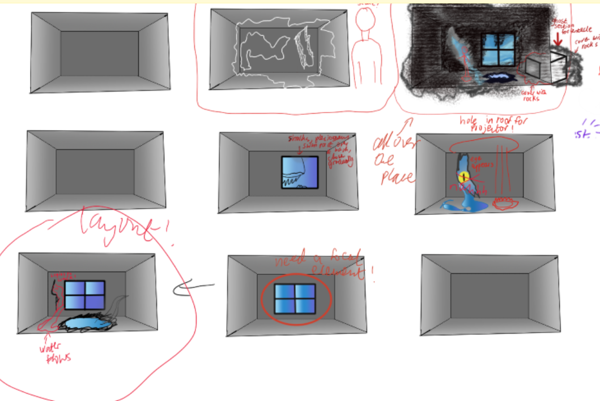
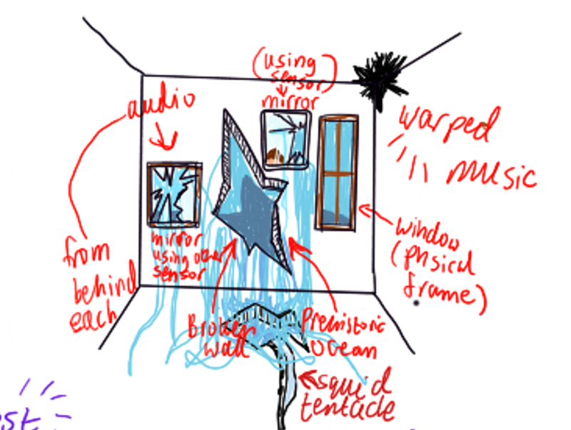
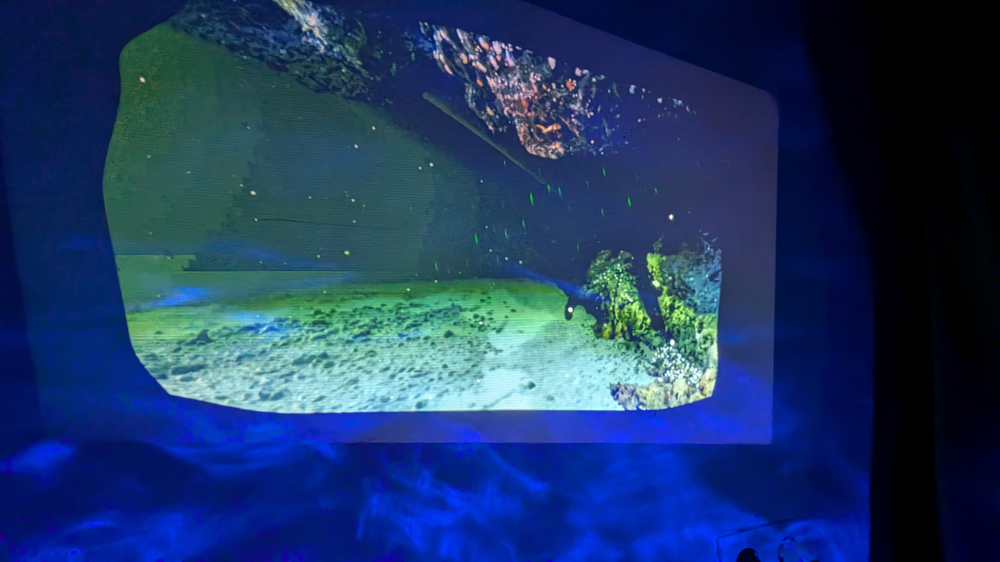
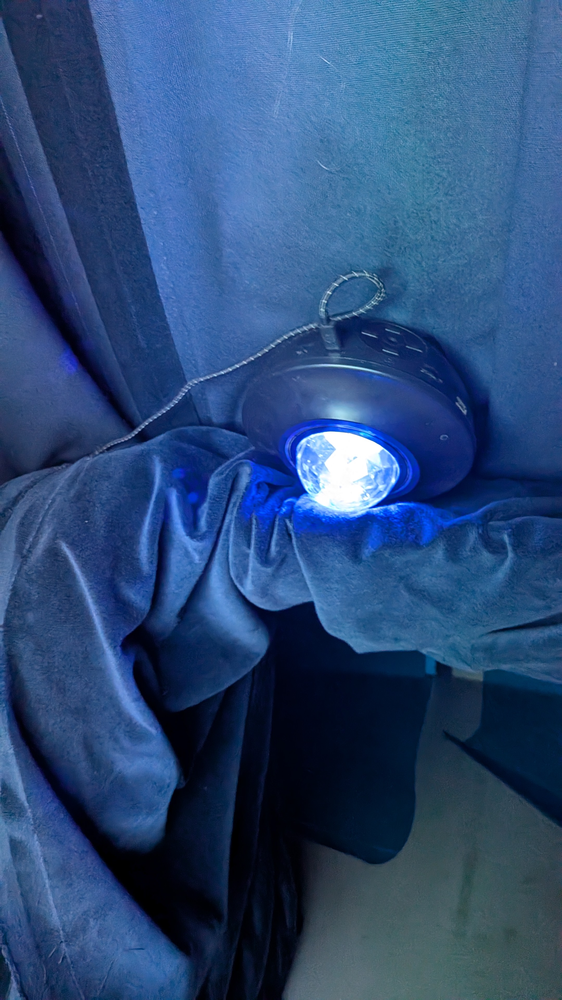
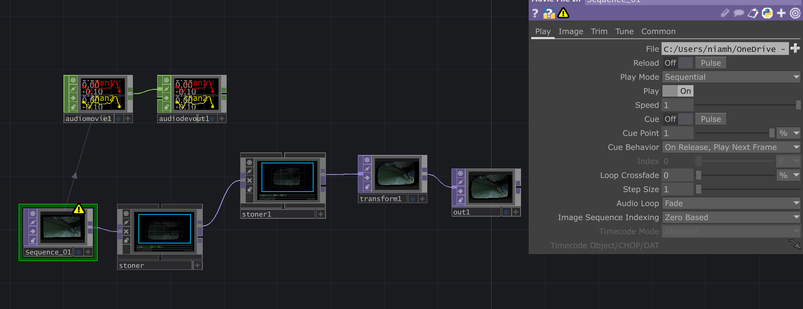

Projection mapping
Window to Another World
Blender and projection mapping.
Description
The goal of this project was to use projection mapping to create a window to another world. My project fitting this theme was inspired by my love of marine life, and my fascination with the history of it. I utilised 3D models and animation in Blender to simulate a window to the world we live in, over 66 million years ago! The digital scene depicts the plesiosaurus, an extinct marine reptile of the Triassic period. I created a physical cave with carefully crafted audio to immerse the person experiencing my project. It is intended to be slightly intimidating, perhaps even frightening to experience.
These creatures were several meters long, and I built my exhibition with the intent to accurately capture their large scale in comparison to a human. The physical exhibition is comprised of heavy black-out curtains shaping a cave with an entrance for the person to crawl through to get inside. It has a light with an ocean effect hidden above the entrance to make the person feel as if they are experiencing an underwater cave. The floor within the cave is covered with cardboard for kneeling comfort.
I added blue acrylic paper to go through at the door, so when the light shines from within the cave it produces an effect of vibrant blue water at the entrance.
Motivation
As I have touched on in the description, my drive to create this project was a passion for aquatic life and the history of our natural world. It is a small way to connect with the past and the creatures that would never see us. I had a very specific vision for the project when I started it, and the best way to achieve it was through Blender, a software I was not very familiar with before this project. I had always had an interest in 3D and digital art, and the things you can do with it are endless, limited only by your imagination. So to realise my vision for the project, I taught myself how to animate, build and render a simple scene in Blender.
Design process
As I was so passionate about this project, I had many ideas already brewing for it. I researched different prehistoric creatures and was deciding between the megalodon and the plesiosaur. The Plesiosaur matched my vision for the scene better, and I have included images of early concept art in my development section at the end of the page! I also researched the movement patterns and behaviours of a plesiosaur, finding that they grazed the sea floor and moved quickly otherwise to capture prey. I incorporated these moves for a more accurate and realistic depiction of their movements.
See the development process at the end of the page for content. I watched countless videos, and spent weeks learning the Blender software in order to create this animation. The first iteration was deleted from a temp file, and I remade it from scratch. In the first version of the scene, the viewer was placed in the open water beside some rocks, not in a cave. The plesiosaur was also chasing a shark, however I omitted the shark from the second iteration in order to make the scene easier for a viewer to follow and experience. The plesiosaur model was created by an online artist and the cave walls were works of photogrammetry preservation of an octopus habitat in Davidson Seamount, CA. I constructed every other part of the scene myself, and put it together.
I had some prior experience working in Unity's 3D game editor, which is similar in a lot of ways to Blender, however the process of placing a camera, rendering fog and creating the illusion of an underwater scene was a new challenge to me. I believe that the final version of my render is significantly better than what I had lost, as it challenged me to recreate what I had done using different tutorials by myself. I spent weeks figuring out how to animate along a bezier curve, and key-framing sporadic movement like that of the plesiosaur, eventually growing more familiar with the software.
I did not want the audio to stand out immediately, as the focus of this exhibition was the visual and unsettling feeling I wanted to instill. You can hear the first version of the audio in my initial render pass shown in the development section. I felt that the original underwater atmosphere I was using sounded too modern, with it's submarine sounds. I realised that I did not want the viewer to feel like they were travelling back in time with a submarine, I wanted to immerse them in an older feeling environment. In the newer version, I added some audio to fade in and out when the plesiosaur is near, to create a tenser atmosphere for the person experiencing it.
It took me around two hours to build the physical aspects of the exhibition. As I briefly mentioned in the description, I suspended black-out curtains from a bar attached to the low ceiling and pulled the bottom of the curtain back over a table to create a canopy. After testing the projection against the black curtain, a white curtain and the wall, the most effective result was to project against the wall, as it provided the clearest image to the viewer. I borrowed the oceanic lamp from one of my peers, and plugged it into the same board as my short-distance projector and laptop. Carefully, I configured my plug board set-up so it was hidden from the inside of the exhibition. It was obscured by a curtain, exposed to enough air from the outside that it would not become a fire hazard.
Feedback
Reflection
In my sketches of my layout, I placed the projector in a position that was not feasible in person, as the top of the projected video was being cut off slightly by the blanket cave wall. Using Blender was an incredibly steep learning curve for me, but I was determined to have my vision realised. It was disheartening to lose all of my initial work and having to start from scratch, and that taught me that careful file management is imperative for projects that are primarily digital! I recognise that I chose a very ambitious project for my first animation and fully rendered scene in Blender, and perhaps for future projects I will start smaller, working with software I am more familiar with when prototyping. I am satisfied with the final animation, the physical layout of the environment and the audio experience, and I hope each person who experiences this exhibition will come out with a feeling of appreciation and unease.
Development pictures & videos




